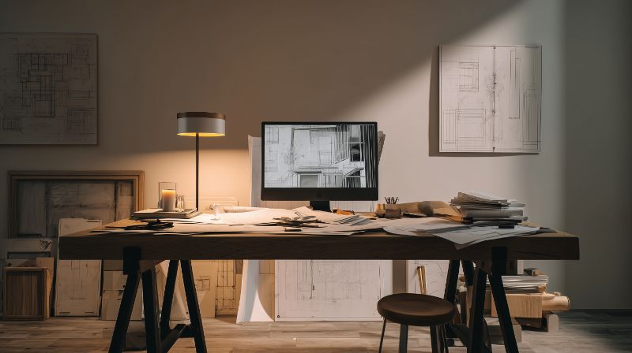
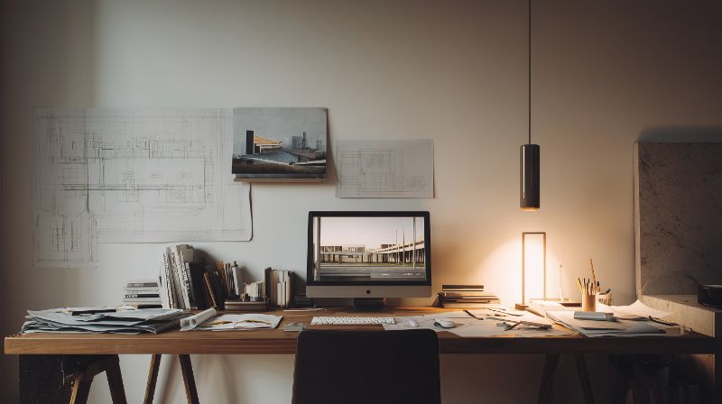
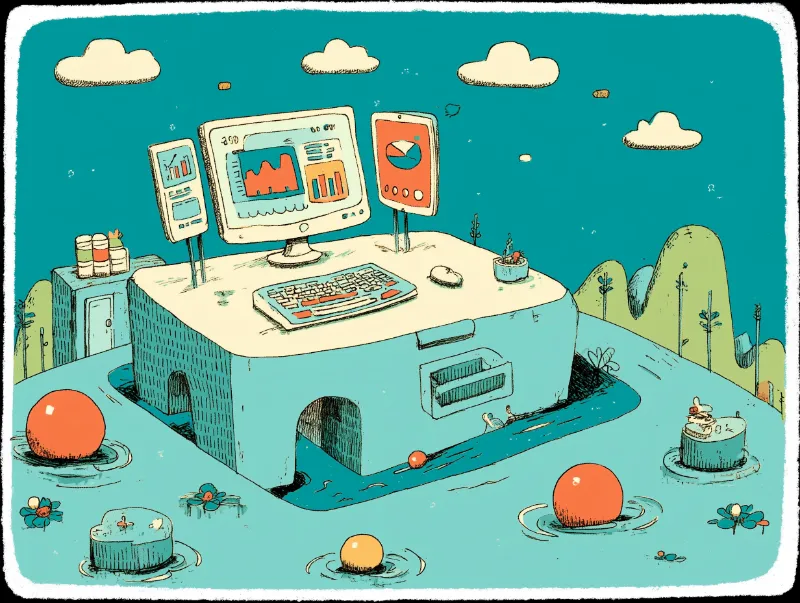

Arquiteto
em
movimento
Tipografia editorial, paleta stone e grid de 12 colunas — agora com beams, glass, flashlight e reveals calibrados em cubic-bezier(0.16, 1, 0.3, 1).
0
Componentes0
Tokens de cor0
AnimaçõesForma
segue
Movimento
Tipografia
Três vozes: Inter para estrutura, Geist Mono para metadados e Instrument Serif para o contraponto editorial.
Inter
- stack
- 'Inter', ui-sans-serif, system-ui, 'Segoe UI', Roboto, sans-serif
- pesos
- 300 · 400 · 500 · 600 · 700
- carga
- local · woff2 · font-display: swap
- arquivo
- assets/css2_19fd9cc6b396.css
Geist Mono
- stack
- 'Geist Mono', ui-monospace, SFMono-Regular, Menlo, monospace
- pesos
- 300 · 400 · 500
- carga
- local · woff2 · swap
- arquivo
- assets/css2_62759cd015bd.css
Instrument
- stack
- 'Instrument Serif', Georgia, 'Times New Roman', serif
- pesos
- 400 (regular + italic)
- uso
- 1 palavra por título, nunca em body
- arquivo
- assets/css2_2b2d87bc82d8.css
Arquiteto Digital
6rem (96px) · lh 1 · ls −0.05em · none
Design & estratégia
3rem (48px) · lh 1 · ls −0.05em · none
Estudos de caso
2.25rem (36px) · lh 2.5rem · ls −0.025em · none
Nome do projeto
1.875rem (30px) · lh 2.25rem · ls −0.025em · none
Título de card ou lista
1.25rem (20px) · lh 1.75rem · ls 0 · none
Competências principais
0.875rem (14px) · lh 1.25rem · ls 0.1em · uppercase
Reflexões sobre a interseção entre design, tecnologia e psicologia humana. Explorando como construir ferramentas melhores para pensar.
1.125rem (18px) · lh 1.625 · ls 0 · none
Texto corrido padrão para parágrafos, descrições e conteúdos de apoio em cards e seções.
1rem (16px) · lh 1.625 · ls 0 · none
Redesenho do fluxo de investimento para a geração Z, resultando em 40% de aumento na conversão.
0.875rem (14px) · lh 1.625 · ls 0 · none
0.75rem (12px) · lh 1rem · ls 0.1em · uppercase
0.75rem (12px) · lh 1rem · ls 0 · none
0.6875rem (11px) · lh 1 · ls 0.25em · uppercase
Sistema de cores
Monocromia quente: a escala stone do Tailwind sobre o papel #EAEAE5. Contrastes calculados contra o fundo indicado (WCAG 2.1).
rgb(234 234 229)
hsl(60 11% 91%)
rgb(255 255 255)
hsl(0 0% 100%)
rgb(245 245 244)
hsl(60 5% 96%)
rgb(231 229 228)
hsl(20 6% 90%)
rgb(214 211 209)
hsl(24 6% 83%)
rgb(168 162 158)
hsl(24 5% 64%)
rgb(120 113 108)
hsl(25 5% 45%)
rgb(87 83 78)
hsl(33 5% 32%)
rgb(41 37 36)
hsl(12 6% 15%)
rgb(28 25 23)
hsl(24 10% 10%)
rgb(28 28 28)
hsl(0 0% 11%)
rgb(12 10 9)
hsl(20 14% 4%)
Feedback
Quatro tons dessaturados que respeitam a monocromia. Usados somente em texto, ícone e borda — nunca como fundo sólido de área grande.
rgb(63 98 18)
hsl(86 69% 23%)
rgb(146 64 14)
hsl(23 83% 31%)
rgb(185 28 28)
hsl(0 74% 42%)
rgb(29 78 216)
hsl(224 76% 48%)
Regras de uso e contraste
| Token | Papel | Texto | Fundo | Borda | Hover / Ativo | Desabilitado | Contraste |
|---|---|---|---|---|---|---|---|
| Tinta #1C1C1C | primário | body, títulos | botão primário | foco (2px) | → stone-700 | opacity .4 | 14.1:1 sobre papel · AAA |
| stone-900 #1C1917 | primário | títulos | footer, pill ativa | pill outline | bg → branco | — | 14.5:1 · AAA / branco sobre ele 17.5:1 |
| stone-600 #57534E | secundário | texto de apoio, links | — | — | → stone-900 | — | 6.3:1 · AA |
| stone-500 #78716C | secundário | labels mono ≥12px uppercase | — | — | — | texto desabilitado | 4.0:1 · AA só para texto grande |
| stone-400 #A8A29E | decorativo | captions não essenciais | toggle off | input | ícone → stone-800 | placeholder | 2.1:1 · decorativo |
| stone-300 #D6D3D1 | neutral | — | swatch | todas as divisórias | — | — | 1.2:1 · não textual |
| stone-400 sobre stone-900 | secundário (dark) | labels no footer | — | — | → branco | — | 6.9:1 · AA |
| branco sobre stone-950 | primário (dark) | títulos em glass | — | white/10 | — | white/40 | 19.8:1 · AAA |
Variantes de opacidade
stone-900/5 → flashlight claro · /40 → overlay de imagem · /60 → backdrop de modal.
white/10 → ring em glass · white/20 → beam shimmer · white/40 → borda de badge glass.
Participação em gradientes
Texto em gradiente
Componentes
Cada componente mostra os estados padrão, hover, ativo, foco e desabilitado. Passe o mouse, use Tab e clique.
Botões
Padding px-6 py-3 (md) ou px-8 py-4 (lg). Fonte Inter 500, 14px. Transição 300ms. Ícone desloca translate-x-1 no hover.
- hover → bg stone-700 / shimmer
- active → scale(.98)
- focus-visible → outline 2px tinta, offset 3px
- disabled → opacity .4, cursor not-allowed, sem animação
Inputs
Campo de linha única com label flutuante (mono uppercase ao focar) e barra que cresce da esquerda com o easing da casa (500ms).
- default → borda stone-400
- focus → barra tinta scaleX(1)
- error → #B91C1C + helper
- success → #3F6212
- disabled → tracejado, stone-400
Como aparece no contrato.
Cards
Card de projeto (lista editorial), card flashlight, card glow e card glass escuro com --border-gradient.
Nova Finance
Redesenho do fluxo de investimento para a geração Z, com 40% de aumento na conversão.
Card flashlight
Radial de 600px seguindo o cursor via --mouse-x/--mouse-y.
Card glow
Sombra 30px a 15% e translateY(−2px).
Card glass
blur(20px) + borda em gradiente por máscara.
Badges
Geist Mono 11–12px, uppercase, tracking 0.1–0.25em. Pill de 1px. Versão glass usa border-white/40 backdrop-blur-md.
Tooltips
Aparecem em hover e focus-within; sobem 6px com o easing expo em 300ms. Fundo stone-900, mono 11px.
Navbars
Três variações: editorial sticky (padrão desta página), flutuante glass escura e barra de slides com setas.
Seções
Padrões de seção: cabeçalho numerado, split meta/conteúdo, faixa parallax e capítulo escuro.
Competências
Crio experiências digitais que equilibram sensibilidade estética com clareza funcional. Trabalho enraizado em pesquisa, guiado por dados e polido com precisão de pixel.




Mesma estrutura,
outra luz.
Em superfícies stone-950, bordas viram ring-white/10, textos de apoio viram neutral-400 e as animações ganham blur de entrada (animationIn).
Modal
Backdrop stone-950/60 com blur(6px). Painel entra com translateY(24px) scale(.96) → 1 em 600ms. Fecha com Esc, clique fora ou botão. Foco vai para o título e volta ao gatilho.
.modalfixo, flex center,padding 1rem(seguro em 375px).backdropabsoluto — recebe o clique de fechar.panelmax-w-lg, borda stone-300,role="dialog" aria-modal="true"- Cabeçalho mono + título H3 + corpo body-md + ações alinhadas à direita
Iconografia
Iconify com dois estilos do conjunto Solar: linear em superfícies claras, bold-duotone em superfícies escuras. Logos via Simple Icons.
solar:*-linear · claro
solar:*-bold-duotone · escuro
Motion & animações
Easing da casa: cubic-bezier(0.16, 1, 0.3, 1). Entradas de 0.8–1.2s, hovers de 300–500ms, loops lentos (12–40s).